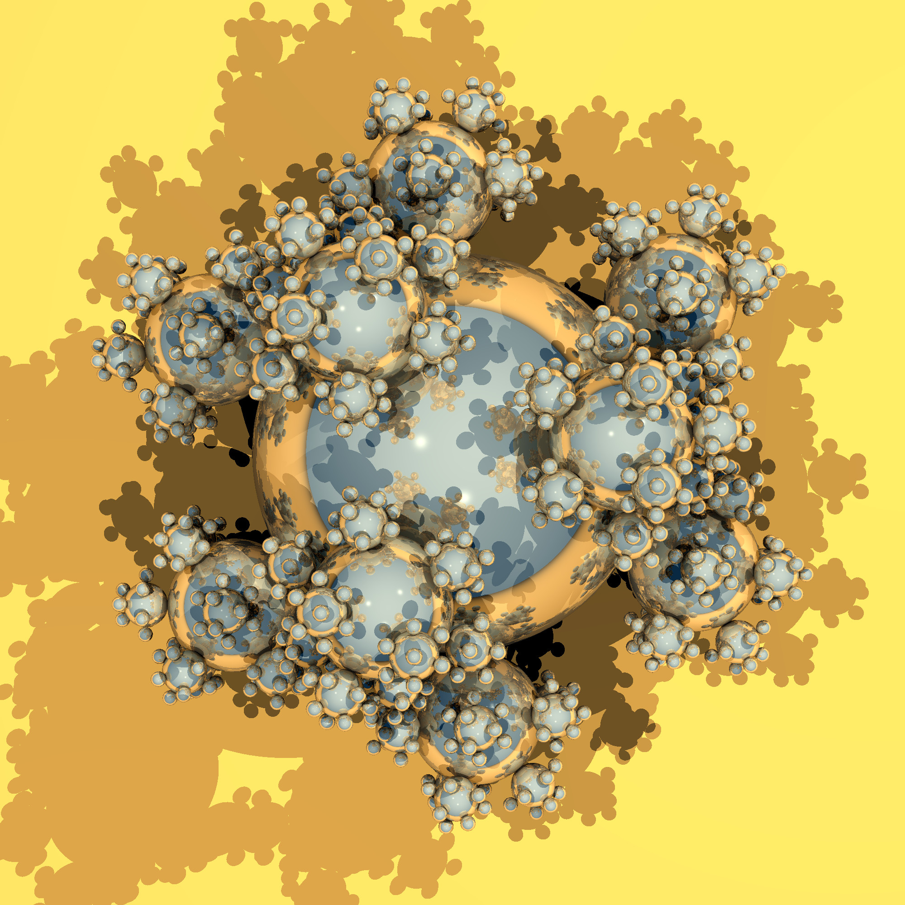
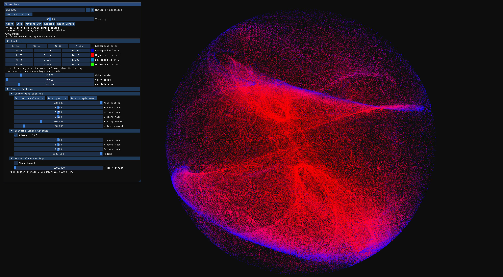
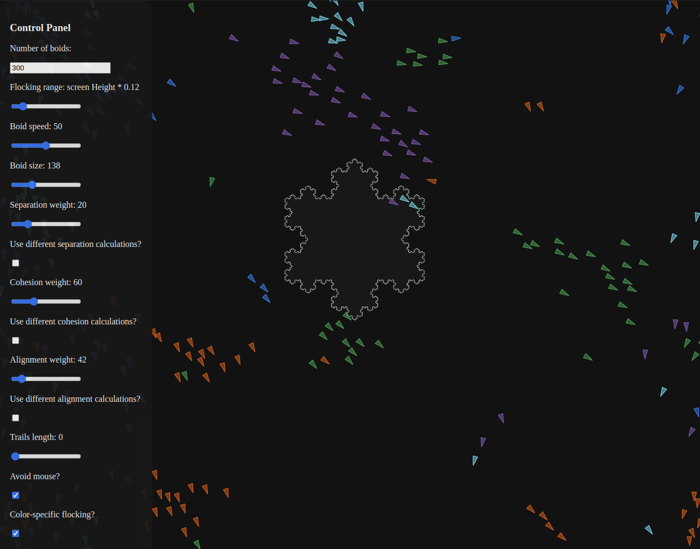
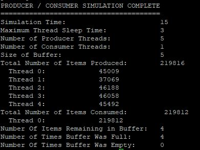

Projects
Selected Personal Projects
Graphics, simulation, and systems-level projects built outside of work.





Aerospace Software Engineer
Building safety-critical embedded systems & tooling for the aerospace industry.
Software engineer with hands-on experience in DO-178C qualification, embedded C/C++ development, Python tooling, and CI/CD pipeline design for regulated aerospace environments.
About
I am a software engineer focused on the aerospace industry, where precision and reliability are not optional - they are the standard. My work spans embedded firmware for flight-critical avionics, desktop debugging tools, and developer-facing Python tooling that accelerates qualification and compliance workflows.
I bring a strong interest in building robust CI/CD pipelines that catch defects early and enforce code quality standards before a single line ships. I believe that modern software practices - static analysis, automated testing, continuous integration - are force multipliers in regulated environments like DO-178C.
Outside of work, I enjoy graphics programming, systems-level projects, and exploring the intersection of high-performance computing and real-time simulation.
Experience
Focused on safety-critical software development for aerospace platforms, from embedded firmware to developer tooling and CI/CD automation.
Belcan, LLC (a Cognizant company), contracted to Collins Interiors • Grand Rapids, MI
Belcan, LLC, contracted to Collins Interiors • Grand Rapids, MI
Texas A&M University-Corpus Christi
Skills
A combination of embedded systems expertise and modern software-engineering practices, tailored for safety-critical aerospace development.
Projects
Graphics, simulation, and systems-level projects built outside of work.




Education
Grand Valley State University (GVSU)
Winter 2026 Semester — Currently Accumulating Credits
Currently attending GVSU and accumulating credits toward a Master's degree in Software Engineering. Began Data Engineering coursework in January 2026.
Texas A&M University-Corpus Christi
Graduated December 2021
Emphasis on Systems Programming. Relevant coursework included Computer Architecture, Operating Systems, Computer Graphics, Computer Networking, Software Engineering, Database Systems, and Data Structures.
Contact
Interested in working together or have a question? Feel free to reach out.